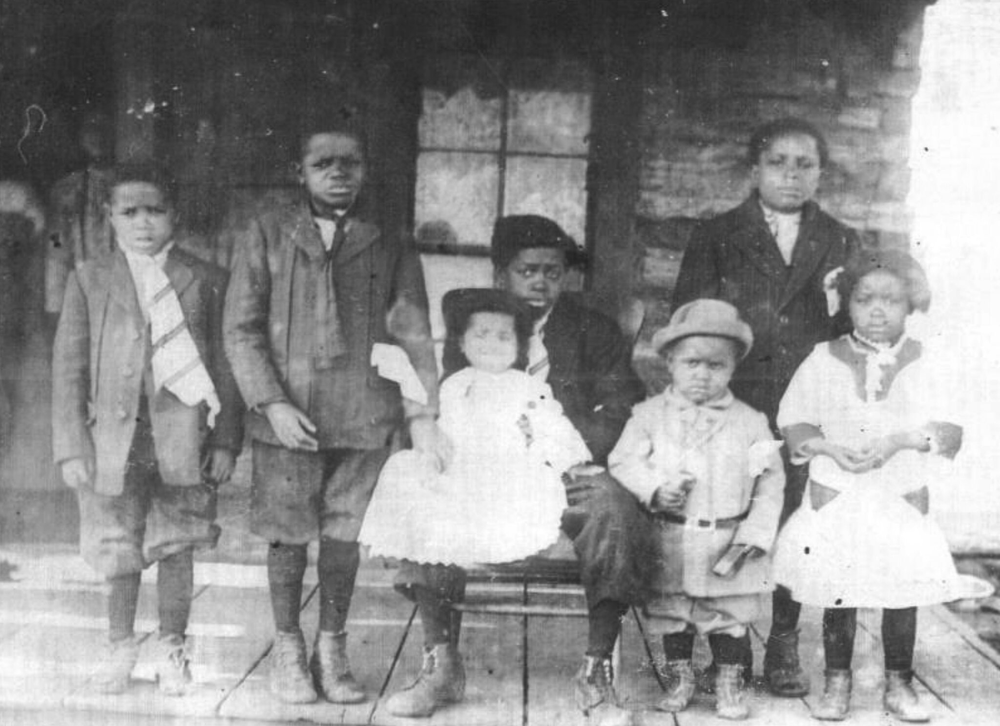
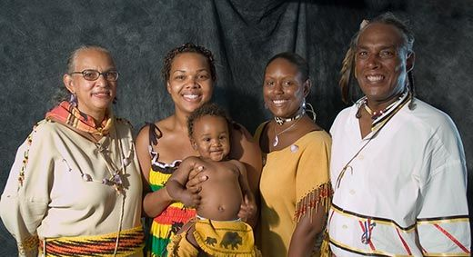

How a Clerk's Pen Rewrote a People
Indigenous identity in America was not lost. It was reclassified — deliberately, systematically, and on paper. Here is how it happened, and why the same paper that erased your family can now restore it.
The Dawes Rolls: Sorted by Sight, Not by Lineage
In 1893, Congress established the Dawes Commission to dissolve the governments of the Cherokee, Choctaw, Chickasaw, Muscogee (Creek), and Seminole nations and divide their communal lands into individual allotments. To do that, the Commission had to decide — person by person — who counted as a citizen of each nation. Between 1898 and 1907 (with additions through 1914), it processed more than 250,000 applications and placed over 101,000 names on what became the Final Rolls of Citizens and Freedmen of the Five Civilized Tribes.
Applicants were sorted into separate categories: Citizens by Blood, Intermarried Whites, and Freedmen. And here is the injustice that echoes into the present: a blood quantum was recorded only for those enrolled “by blood.” The enrollment clerks — white men from outside the nations — routinely placed people of visible African descent on the Freedmen rolls regardless of their Native parentage, recording no blood relation to the tribe at all.
Historian Alaina E. Roberts puts it plainly: enrollment often came down to what clerks thought an Indian or a Black person looked like. Light-skinned applicants could land on the blood roll while their darker-skinned relatives were listed as Freedmen. There are documented cases in every one of the Five Tribes of members of the same family placed on different rolls.
The consequence was generational. Because tribal citizenship later came to depend on tracing to a “by blood” ancestor, the missing blood quantum on a Freedmen card severed descendants from nations their families had belonged to for generations — not because the ancestry wasn't there, but because a clerk never wrote it down.

Paper Genocide: Virginia and the One-Drop Rule
Oklahoma was not an isolated case. In Virginia, the Racial Integrity Act of 1924 recognized only two categories of person: “white” and “colored.” Walter Ashby Plecker, the state's first registrar of vital statistics and an avowed eugenicist, weaponized that law for over three decades — systematically reclassifying Virginia's Indigenous people as “colored” on birth, marriage, and death certificates. When federal officials inquired about Virginia's Indians, Plecker's answer was that there were none.
By 1930, Virginia law had hardened into an explicit one-drop rule: “Every person in whom there is ascertainable any negro blood shall be deemed and taken to be a colored person.” With a sentence, entire Indigenous communities vanished from the official record. Scholars and tribal leaders call this what it was: paper genocide. Its effects were so thorough that no Virginia tribe achieved federal recognition until 2018 — more than fifty years after Loving v. Virginia struck the act down.
Across the South, census enumerators exercised the same discretion with the same results: self-identified American Indians were recorded as “Black,” “negro,” or “mulatto” based on appearance and community assumption. Generation after generation, the paper identity drifted further from the true one — until families themselves no longer knew what had been taken.
Five Centuries Together: The History They Couldn't Erase

African-descended and Indigenous peoples have been kin on this continent for five hundred years. Historian William Loren Katz, whose landmark book Black Indians opened this history to a generation, wrote that the first paths to freedom taken by those escaping slavery led to Native villages — where they found acceptance, family, and nationhood.
The Black Seminoles built maroon communities in Spanish Florida, fought removal, and under leaders like John Horse marched to freedom in Mexico. Their sons returned as the U.S. Army's Seminole Negro Indian Scouts — a unit that fought twenty-six campaigns without losing a single man killed or wounded in action, and produced four Medal of Honor recipients.
In the East, the Mashpee Wampanoag, Shinnecock, and Lumbee peoples intermarried with African Americans for centuries while holding their nations together — and each had their Indian identity challenged on exactly that basis. Each persisted. The Mashpee won federal recognition in 2007; the Shinnecock in 2010. The blood never broke. Only the paperwork did.
After the Civil War, the Treaties of 1866 bound each of the Five Tribes to abolish slavery and extend citizenship to their Freedmen — the Cherokee treaty promising them “all the rights of native Cherokees.” Those treaty words, written 160 years ago, are today the legal foundation on which descendants are winning their citizenship back.
The Record, Year by Year
- 1830s
Removal. The Five Tribes are forced to Indian Territory — and Black tribal members, enslaved and free, walk the Trail of Tears beside them.
- 1849–50
John Horse and Wild Cat lead Black Seminoles and Seminoles out of Indian Territory to freedom in Nacimiento, Mexico.
- 1866
The Treaties of 1866. Slavery is abolished in the Five Tribes; Freedmen and their descendants are guaranteed the rights of citizens. The promise enters the record.
- 1870s
The Seminole Negro Indian Scouts serve with distinction; Adam Paine, Pompey Factor, Isaac Payne, and John Ward earn the Medal of Honor.
- 1893
Congress establishes the Dawes Commission to dissolve tribal governments and allot communal land.
- 1898–1907
Dawes enrollment. Over 101,000 names entered; families sorted by appearance into “by blood” and “Freedmen” rolls. 23,599 people are listed as Freedmen — blood quantum left blank.
- 1924
Virginia's Racial Integrity Act. Walter Plecker begins three decades of reclassifying Indigenous Virginians as “colored.”
- 1930
Virginia adopts the explicit one-drop rule: any “ascertainable” African ancestry makes a person legally “colored” — and erases them as Indian.
- 1967
Loving v. Virginia strikes down the Racial Integrity Act.
- 2017
Cherokee Nation v. Nash: a federal court rules the Treaty of 1866 guarantees Cherokee Freedmen descendants full citizenship.
- 2021
The Cherokee Nation Supreme Court strikes the words “by blood” from the Cherokee Constitution.
- 2023–25
Muscogee (Creek) courts rule for Freedmen descendants — the Nation's Supreme Court unanimously affirms in July 2025 that the Treaty of 1866 guarantees their citizenship.
- Today
The records are digitized, the precedents are set, and a generation of descendants is searching. This is where you come in.
The clerks wrote it down. That means it can be found.
Every enrollment card, every application packet, every roll number is preserved and searchable. The paper trail that took your family's identity is the same trail that leads back to it.